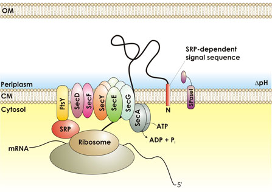
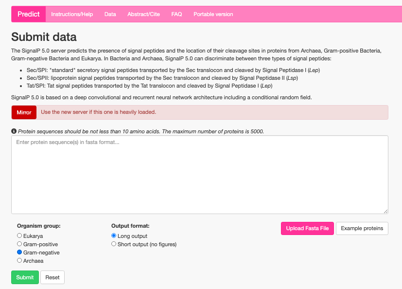
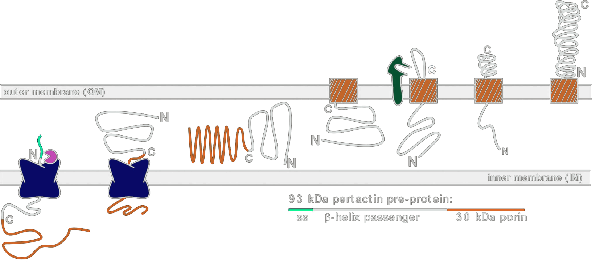
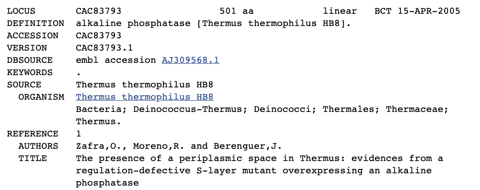

Protein Localization
- What distinct compartments exist in a bacterium?
- Where can a protein be directed in the cell?

The signal (pre) sequence
also “signal sequence”, also “leader sequence”

E. coli alkaline phosphatase, PhoA · paste it in, pick Gram-negative · expect Sec/SPI, cleaved after A21
>NP_414917.2 alkaline phosphatase PhoA [Escherichia coli K-12 MG1655] MKQSTIALALLPLLFTPVTKARTPEMPVLENRAAQGDITAPGGARRLTGDQTAALRDSLS DKPAKNIILLIGDGMGDSEITAARNYAEGAGGFFKGIDALPLTGQYTHYALNKKTGKPDY VTDSAASATAWSTGVKTYNGALGVDIHEKDHPTILEMAKAAGLATGNVSTAELQDATPAA LVAHVTSRKCYGPSATSEKCPGNALEKGGKGSITEQLLNARADVTLGGGAKTFAETATAG EWQGKTLREQAQARGYQLVSDAASLNSVTEANQQKPLLGLFADGNMPVRWLGPKATYHGN IDKPAVTCTPNPQRNDSVPTLAQMTDKAIELLSKNEKGFFLQVEGASIDKQDHAANPCGQ IGETVDLDEAVQRALEFAKKEGNTLVIVTADHAHASQIVAPDTKAPGLTQALNTKDGAVM VMSYGNSEEDSQEHTGSQLRIAAYGPHAANVVGLTDQTDLFYTMKAALGLKAnd you do not have to eyeball it. SignalP will take a sequence and tell you whether it thinks there is a signal peptide on the front of it and where the cleavage site is. Which is the tool you want for the question at the end of this section. SignalP output: a plot of cleavage site probability along the N-terminal residues of a protein sequence.
Some of these the protein forces on you. The rest you choose, because everything after the incubator gets easier.
Getting it there is a prepro signal on the front, and you take one that already works — pelB, ompA, ompT. A periplasmic leader peptidase, LepB for most proteins and LspA for lipoproteins, cuts it off on arrival.
Why you would want the periplasm at all, which is the question the slide should answer. Split them by who is making the decision, because that is what tells you whether you have a choice. The left column is the protein deciding for you. Some proteins are toxic in the cytoplasm and perfectly fine on the other side of the membrane. Some cannot fold in the cytoplasm at all, because it is a reducing environment and they need disulfides, and antibody fragments are the standard example. And anything destined for the outer membrane or for secretion passes through the periplasm on the way, so you are going there whether you meant to or not. The right column is you deciding, and these are the ones people forget. A signal peptidase cuts at a defined site, so the mature protein starts exactly where you want it to, with no initiator methionine stuck on the front, which matters any time the N-terminus is functional or the protein is a therapeutic. The periplasm is only a few per cent of the cell's protein and an osmotic shock releases it without breaking the inner membrane, so you begin purification from a far simpler mixture than a whole-cell lysate. And if you are building a display library you have no cytoplasmic option at all, because phage and surface display both assemble through this compartment. The mechanism is one line underneath and deliberately so: put a prepro signal on the front, take one from a protein already well expressed in the periplasm rather than designing your own, and a leader peptidase cleaves it when it arrives. LepB does most proteins and LspA does the lipoproteins. Reasons to target the periplasm, in two groups. The protein decides: cytoplasmic toxicity, a need for the oxidising environment to form disulfides, and being en route to the outer membrane or the outside. You decide: an authentic N-terminus from defined peptidase cleavage, a cleaner starting material because osmotic shock releases the periplasm alone, and display technologies which have no cytoplasmic version. A note underneath gives the mechanism — a prepro signal borrowed from pelB, ompA or ompT, cleaved by LepB or LspA.Beta barrel-type proteins
Autotransporters / two-partner secretion

I want to express alkaline phosphatase from Thermus thermophilus (CAC83793.1) in the periplasm of E. coli. Do I need to alter the CDS to get proper localization?

No. It already carries a signal peptide — and look again, because it is a Tat signal, not Sec. E. coli has a Tat system too.
No, it should already go to the periplasm. A question for the room: to express Thermus thermophilus alkaline phosphatase in the E. coli periplasm, does the coding sequence need altering? The sequence is shown. The answer arrives on a click.